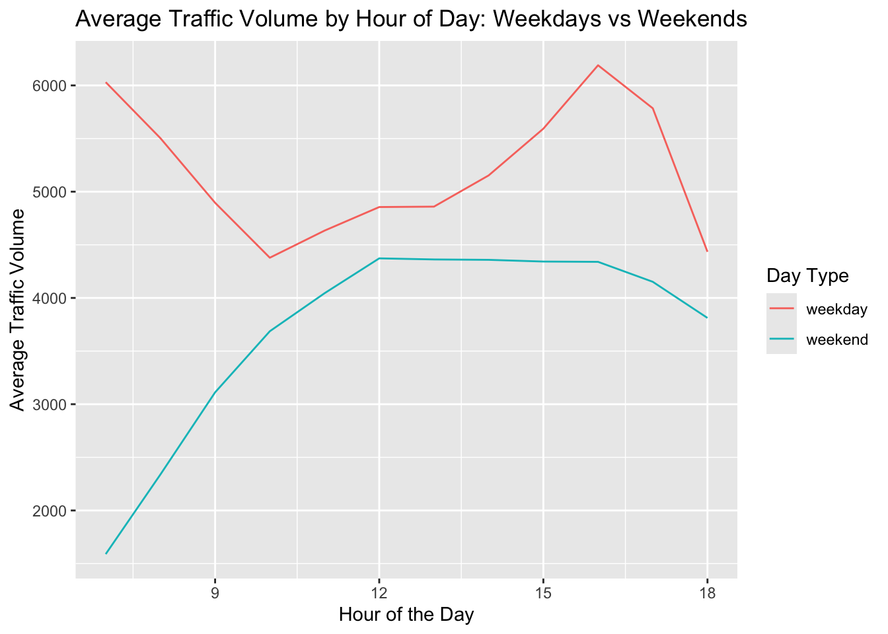
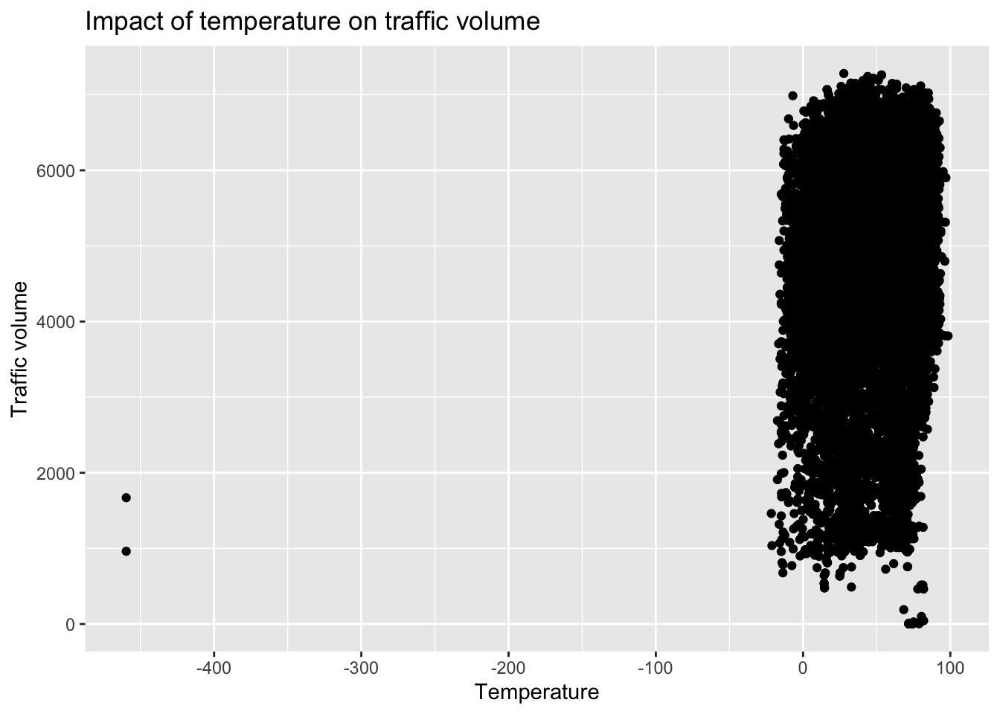
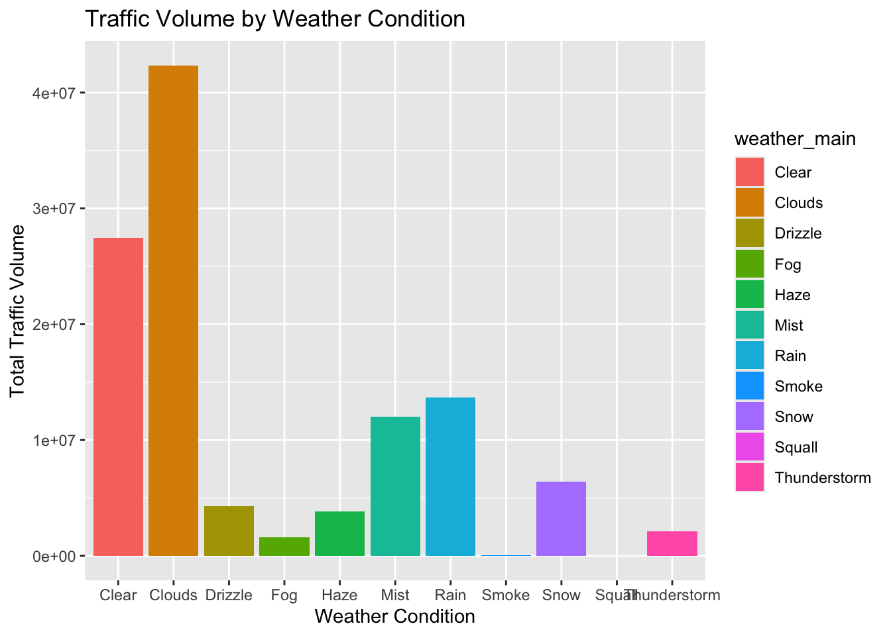

library(readr)
library(dplyr)
library(ggplot2)
i94_metro_interstate_traffic <- read_csv("~/Desktop/Data science/i94_metro_interstate_traffic.csv")Project 2: Analyzing i94 data
Project 2
Hour of the day
avg_traffic_volume <- i94_metro_interstate_traffic %>% group_by(dt_hour)%>% summarize(avg= mean(traffic_volume))
hour_of_the_day <- avg_traffic_volume %>% ggplot(
aes(x=dt_hour, y=avg)) + geom_line() + labs(title="Average Traffic Volume at Different Hours of the day", y="Average traffic volume", x="Hours")
print(hour_of_the_day)
The mean traffic volume per hour of the day shows peaks evident the morning rush hours and the evening rush hours. I believe that there is a direct correlation between the volume of traffic and the amount of individuals travelling between work and school.
Daytime Dataset
daytime <- i94_metro_interstate_traffic %>%
filter(dt_hour >= 7 & dt_hour < 19)
glimpse(daytime)Rows: 23,877
Columns: 15
$ holiday <chr> "None", "None", "None", "None", "None", "None", "N…
$ temp <dbl> 288.28, 289.36, 289.58, 290.13, 291.14, 291.72, 29…
$ rain_1h <dbl> 0, 0, 0, 0, 0, 0, 0, 0, 0, 0, 0, 0, 0, 0, 0, 0, 0,…
$ snow_1h <dbl> 0, 0, 0, 0, 0, 0, 0, 0, 0, 0, 0, 0, 0, 0, 0, 0, 0,…
$ clouds_all <dbl> 40, 75, 90, 90, 75, 1, 1, 1, 20, 20, 1, 1, 1, 1, 1…
$ weather_main <chr> "Clouds", "Clouds", "Clouds", "Clouds", "Clouds", …
$ weather_description <chr> "scattered clouds", "broken clouds", "overcast clo…
$ traffic_volume <dbl> 5545, 4516, 4767, 5026, 4918, 5181, 5584, 6015, 57…
$ date_time <dttm> 2012-10-02 09:00:00, 2012-10-02 10:00:00, 2012-10…
$ dt_year <dbl> 2012, 2012, 2012, 2012, 2012, 2012, 2012, 2012, 20…
$ dt_month <chr> "Oct", "Oct", "Oct", "Oct", "Oct", "Oct", "Oct", "…
$ dt_day <dbl> 2, 2, 2, 2, 2, 2, 2, 2, 2, 2, 3, 3, 3, 3, 3, 3, 3,…
$ dt_wday <chr> "Tue", "Tue", "Tue", "Tue", "Tue", "Tue", "Tue", "…
$ dt_wday_end <chr> "weekday", "weekday", "weekday", "weekday", "weekd…
$ dt_hour <dbl> 9, 10, 11, 12, 13, 14, 15, 16, 17, 18, 8, 9, 12, 1…Day of week
day_of_the_week <- daytime %>% ggplot(
aes(x=dt_wday, y=traffic_volume)
) + geom_boxplot() + labs(
title="Weekly traffic volume",
y="Traffic volume",
x="Day of the week"
)
print(day_of_the_week)
The chart about the traffic volume weekly indicates that the average traffic volume during weekdays is normally greater than that on Saturday and Sunday. We can thus consider commuting as the primary cause of traffic since work and school occur during weekdays.
avg_by_hour_weekend <- daytime %>%
group_by(dt_hour, dt_wday_end) %>%
summarize(avg_volume = mean(traffic_volume), .groups = "keep")
weekdays_weekend <- avg_by_hour_weekend %>%
ggplot(aes(x = dt_hour, y = avg_volume, color = dt_wday_end)) +
geom_line() +
labs(
title = "Average Traffic Volume by Hour of Day: Weekdays vs Weekends",
x = "Hour of the Day",
y = "Average Traffic Volume",
color = "Day Type"
)
print(weekdays_weekend)
Our earlier conclusion can be proven when we compare the hourly traffic volume of weekdays and weekends. Indeed, we notice that weekdays have a sharp spike during the commuting times, whereas weekends have a flat curve and the traffic is not so intense.
Temperature
daytime <- daytime %>% mutate(cels_temp = temp-273.15)
daytime <- daytime %>% mutate(fahr_temp = cels_temp* 9/5+32)
traffic_temp <- daytime %>% ggplot(
aes(x=fahr_temp, y=traffic_volume)
) + geom_point() + labs(
title="Impact of temperature on traffic volume",
x="Temperature",
y="Traffic volume"
)
print(traffic_temp)
In this chart, we can notice a problem. Indeed, there are two outliers that show a temperature of less than -400 Fahrenheit. This is probably due to an error that happened when inputing the data. This error lead to the scatter plot to be heavily skewed to the right. To solve this problem, I remove these outliers.
daytime <- daytime %>% filter(fahr_temp > -100, fahr_temp < 150)
traffic_temp_clean <- daytime %>% ggplot(
aes(x=fahr_temp, y=traffic_volume)
) + geom_point() + labs(
title="Impact of temperature on traffic volume",
x="Temperature",
y="Traffic volume"
)
print(traffic_temp_clean)
We removed the outliers, which gave us a more uniform and balanced distribution. We can’t really establish a direct correlation between the temperature and traffic volume, since it doesn’t look like temperature impacts the traffic volume in any way. This can also push us to believe a bit more into our current hypothesis that the traffic volume depends mainly on the commuting, since going to work or school aren’t really affected by the temperature, when leisure activities may be.
Traffic Volume by Weather Condition
weather_summary <- daytime %>%
group_by(weather_main) %>%
summarize(total_volume = sum(traffic_volume), .groups = "keep")
weather <- weather_summary %>%
ggplot(aes(x = weather_main, y = total_volume, fill = weather_main)) +
geom_col() +
labs(
x = "Weather Condition",
y = "Total Traffic Volume",
title = "Traffic Volume by Weather Condition"
)
print(weather)
When we look at the relationship between the traffic volume and the weather conditions, we see that the largest volumes are recorded during the clear and cloudy weather. This can look like the traffic volume is higher under these conditions. However, it should be noted, that clear and cloudy weather are the most common weather types in the dataset. They are simply the most frequent ones and that is why they make the biggest portion of total traffic. Thus, I believe that it’s hard to confirm any correlation between the traffic volume and the whether condition.